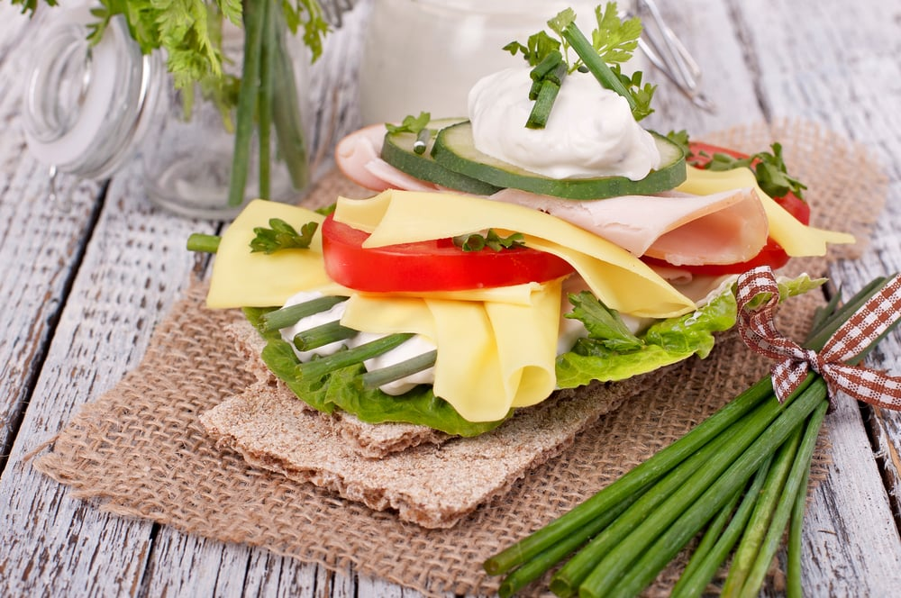
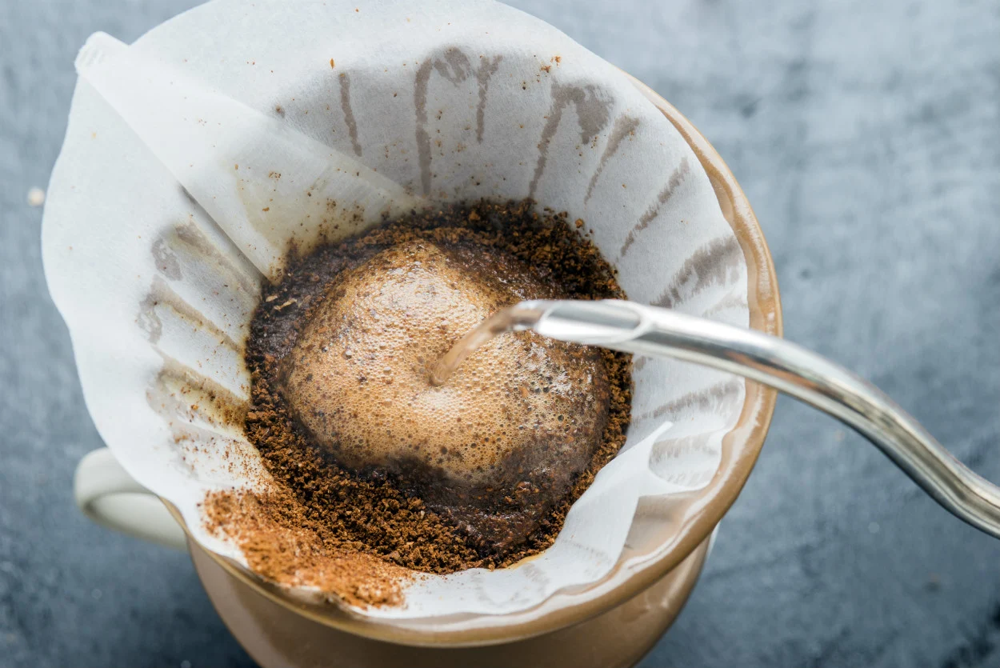
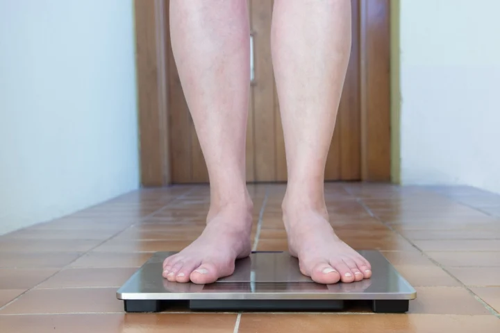
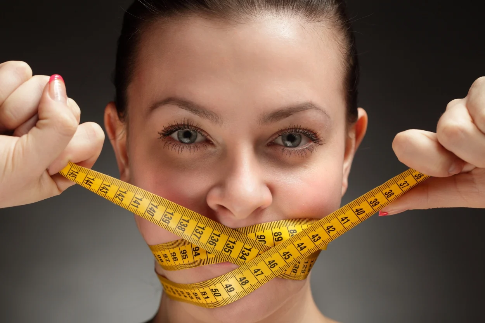

İsveç diyeti nedir?

İsveç diyeti genel olarak tanımlamak gerekirse 6 günden az yapılmayan ve 13 gün ile sınırlı olan, diğer protein diyetlerinin aksine tüketimin sınırlı olduğu bir diyet. Günlere göre değişmekle birlikte günlük 1000 kalorinin altında yiyeceğin tüketildiği İsveç diyeti, halk arasında bu isimle anılsa da dünya çapında "Rigshospitalet Diyeti" adıyla biliniyor.
İsveç diyeti nasıl uygulanır?

İçeriğini %70- 80 oranında proteinlerin oluşturduğu diyet listesinde sıkça yer alan kahve ile hedef metabolizmayı hızlandırarak ani ve yüklü miktarda kilo verdirmektir. Asla tüketilmemesi gereken gazlı içecekler, çay ve tuzun yanı sıra diyette belirli oranlarda yer alan kahve ve meşrubatların fazlası da tüketilmemelidir.
İsveç diyetinde hangi yiyecekler tüketilir?
Sabah kahvaltılarını birkaç günün dışında genel olarak sütsüz ya da bir çay bardağı yağsız süt ile hazırlanmış granül kahvenin oluşturduğu İsveç diyetinde öğlen ve akşam yemeklerinin ilk günlerinde protein kaynağı olarak sadece iki adet haşlanmış yumurta yer alırken ilerleyen günlerde yerini ağırlıklı olarak et, balık ve tavuk ürünlerinin yanında sınırsız olarak alınabilen az yağlı salata oluşturur. Meyve grubu ürünleri belirtildiği üzere ve miktarda alınmalıdır.
İsveç diyeti kaç kilo verdirir?

Diyetin kurallarına tam olarak uyulduğunda 13 günün sonunda 5- 15 kilo arasında kilo kaybı görüldüğü söyleniyor. Ancak bu durum tahmin edebileceğiniz gibi kişiden kişiye büyük farklılıklar gösteriyor. Uygulayan herkesin yaşı, kilosu, gün içinde yaptığı faaliyetler, metabolizma hızı gibi birçok değişken birbirinden farklı olduğundan kaç kilo verebileceğinizle ilgili genel tahmini yine en doğru bir beslenme uzmanından ya da diyestisyenden alabilirsiniz diyebiliriz.
Böyle ciddi bir diyeti uygulayamaya karar verirseniz mutlaka ama mutlaka bir uzmandan destek alıp onun önerileri doğrultusunda uygulamanızı tavsiye ederiz.
İsveç diyeti kaç gün yapılır?

İsveç diyeti, 6 günden az, 13 günden de fazla yapılmayan bir diyettir. Bu nedenle eğer İsveç diyetini yapmaya karar verirseniz asla ama asla bu sınırları aşmamalı, bir diyetisyen ya da beslenme uzmanından destek alıyorsanız onun da önerilerini uygulamayı unutmamalısınız.
Kimler İsveç diyeti yapamaz?

Kolesterol seviyesi yüksek olan, diyabet hastalığı olan ve buna bağlı metabolik rahatsızlığı olan kişiler, gut hastalığı riski taşıyanlar, tanısı konulmuş herhangi bir sağlık problemi olan bireyler, 18 yaş altı ve 60 yaş üstü grup İsveç diyetini uygulamamalıdır. Aksi takdirde metabolik problemleri tetiklerken, tansiyon düşüklüğü vb. ataklar, halsizlik şikayetleri ile sağlıklarından olabilirler.
Tüm bu durumlar dışında yer alan sağlıklı bireyler kolesterol, karaciğer enzimleri ve böbrek testleri 13 gün öncesi ve sonrasında uzman kontrolünde yapıldıktan sonra bu diyeti uygulayabilirler.
Tüm popüler diyetlerde olduğu üzere kişi bazlı değildir, bu nedenle sağlıksız olduğu söylenebilir.